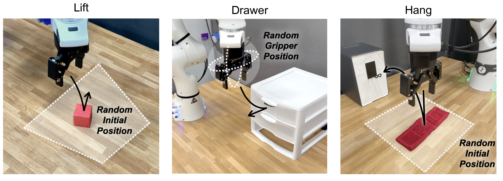
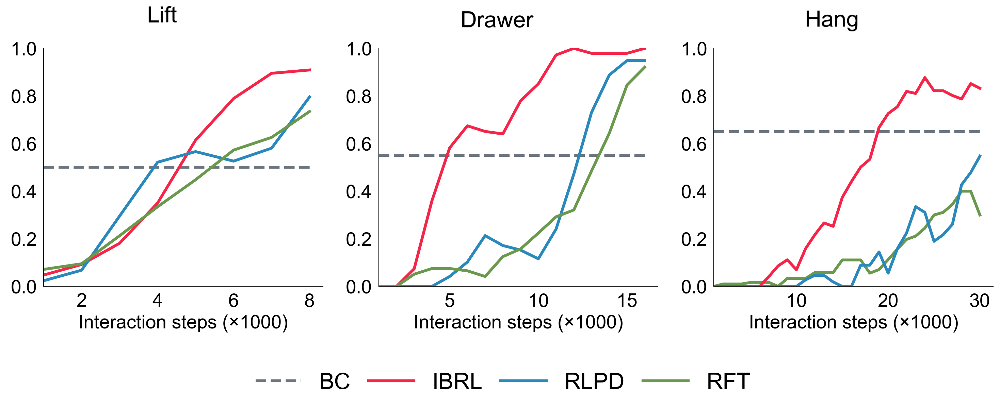

Imitation Bootstrapped Reinforcement Learning
Imitation Bootstrapped Reinforcement Learning (IBRL) is a sample-efficient RL with demonstrations method for policy improvement on real robots.
Illustration of IBRL
Abstract
Despite the considerable potential of reinforcement learning (RL), robotic control tasks predominantly rely on imitation learning (IL) due to its better sample efficiency. However, it is costly to collect comprehensive expert demonstrations that enable IL to generalize to all possible scenarios, and any distribution shift would require recollecting data for finetuning. Therefore, RL is appealing if it can build upon IL as an efficient autonomous self-improvement procedure. We propose imitation bootstrapped reinforcement learning (IBRL), a novel framework for sample-efficient RL with demonstrations that first trains an IL policy on the provided demonstrations and then uses it to propose alternative actions for both online exploration and bootstrapping target values. Compared to prior works that oversample the demonstrations or regularize RL with an additional imitation loss, IBRL is able to utilize high quality actions from IL policies since the beginning of training, which greatly accelerates exploration and training efficiency. We evaluate IBRL on 6 simulation and 3 real-world tasks spanning various difficulty levels. IBRL significantly outperforms prior methods and the improvement is particularly more prominent in harder tasks.
Result Highlights

Illustrations of each task and the variation in the initialization of each task.

IBRL consistently outperforms RLPD and RFT in all 3 tasks, with a larger gap on the more complex tasks.
RLPD (RL with prior data): add demonstrations to RL replay buffer and oversample them during RL training.
RFT (regularized fine-tuning): first pretrain the actor with BC and then run RL with BC loss added to the actor loss for regularization.
Rollouts of IBRL Checkpoints
Open the Drawer
(Refresh to sync the start time)
Hang the Cloth
(Refresh to sync the start time)
A Full Training Run
Open the Drawer (3x speed up)
- 4:00 : 1st success
- 4:15 : 2nd success
- 5:00 - 9:00 : 3rd and 4th successes @ 5:00 and more successes afterwards
- 9:00 - end : frequent & consecutive success
Result in Simulation

Performance on Meta-World. IBRL outperforms both MoDem and RLPD on all 4 tasks.
Actor Dropout is a regularization techinique independent of IBRL.
RFT achieves similar performance to IBRL but requires tuning to find proper weight for BC loss.
The horizontal dashed lines indicate the average success rate of the BC policies used in IBRL.

Performance on Robomimic.
IBRL significantly outperforms RFT and RLPD on all 4 scenarios.
The gap between IBRL and baselines is especially large on the more difficult Square task.
The horizontal dashed lines are the score of BC policies in IBRL.
Citation
@misc{hu2023imitation,
title={Imitation Bootstrapped Reinforcement Learning},
author={Hengyuan Hu and Suvir Mirchandani and Dorsa Sadigh},
year={2023},
eprint={2311.02198},
archivePrefix={arXiv},
primaryClass={cs.LG}
}
Acknowledgements
We would like to thank members of ILIAD lab at Stanford for valuable feedback and discussions. This project was sponsored by JP Morgan Faculty Award, NSF Awards 2125511 and 1941722, the Office of Naval Research (ONR) and the Toyota Research Institute. The website template is from Robots that Ask for Help.